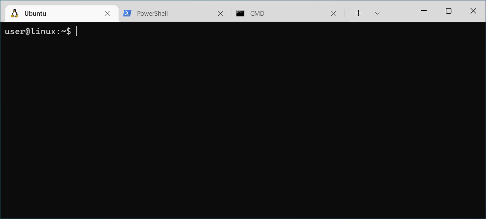

Setting up your development environment#
Before you can contribute to any PyAnsys project, you must set up your developer environment.
Python#
All PyAnsys projects require a Python interpreter for interacting with PyAnsys libraries. Therefore, you must ensure that at least one Python interpreter is installed on your local machine.
Installation#
There are multiple ways to install a Python package on your local machine:
Use an official installer from the official Python download section.
Install via a package manager or “store” on your machine.
Warning
Ensure that you install Python from an official channel. Do not trust third-party websites or download executable content from them.
To install Python on a machine running Windows:
Download the latest stable Python version for Windows.
Execute the installer, referring to Using Python on Windows for detailed installation instructions.
To install Python on a machine running the macOS:
Download the latest stable Python version for macOS.
Execute the installer, referring to Using Python on a Mac for detailed installation instructions.
Note
It is likely that your macOS distribution already comes with some version of Python installed. For more information, see Verification.
To install Python on a machine running Linux/UNIX:
Download the latest stable Python version for Linux/UNIX.
Decompress the source code and follow the installation instructions in the
README.rstfile. For more information, see Using Python on Unix Platforms.
Note
It is likely that your Linux/UNIX distribution already comes with some version of Python installed. For more information, see Verification.
Verification#
Once your Python installation is complete, verify it with:
py --version
py --version
python --version
python --version
Virtual environments#
When working in multiple Python projects, it is likely each of these projects has its own requirements. Sometimes, requirements across projects can be incompatible. Virtual environments were devised to isolate Python environments, which guarantees that you do not face dependency problems when working in multiple projects.
For information on the most fundamental commands for manipulating and interacting with a Python virtual environment, see the official Python documentation on the venv module.
Check#
Before creating a new virtual environment, you must run this code to see if you are already working with one:
where.exe python
where.exe python
which python
which python
This command returns the path to the Python virtual environment that your system is currently using.
Ensure that it points to your default installation and not to a virtual environment. If it points to a virtual environment, see Deactivate for information on deactivating your virtual environment.
Create#
Usually, virtual environments are named venv or .venv.
You can create a virtual environment named <venv> with:
py -m venv <venv>
py -m venv <venv>
python -m venv <venv>
python -m venv <venv>
Activate#
You would activate the preceding virtual environment with:
<venv>\Scripts\activate.bat
<venv>\Scripts\Activate.ps1
source <venv>/bin/activate
source <venv>/bin/activate
Deactivate#
You would deactivate a virtual environment with:
deactivate
deactivate
deactivate
deactivate
Git#

Git is an open source version control system (VCS). It is used to track changes and register new content in software-related projects. Git registers the author and date of the changes so that accurate tracking of the software’s evolution is available.
Installation#
To install Git on a machine running Windows:
Download the latest stable standalone Git version for Windows.
Execute the installer and follow the installation instructions.
To install Git on a machine running the macOS:
Check the latest stable Git version for macOS.
Run the installation command for your package manager.
To install Git on a machine running Linux/UNIX:
Check the latest stable Git version for Linux/UNIX.
Run the installation command for your package manager.
Verification#
Once your installation process is complete, verify your Git installation with:
git --version
git --version
git --version
git --version
Usage#
If you are not familiar with Git, see the Git Reference Manual. for comprehensive information on how to use it.
Configuration#
It is very important to properly configure Git so that every modification that you make to the code points to you. There are two types of configuration: Global and Local. It is also possible to combine both to have a Dynamic configuration.
Global#
Global configuration are automatically included in every Git repository on
your machine unless overridden by a Local configuration, which
is located in C:\Users\<username>\.gitconfig for Windows users or in
/home/<username>/.gitconfig for macOS, Linux, or UNIX users.
You can set the value for any variable in a field with:
git config --global <field>.<varname> <value>
Some examples follow.
Set up your name
git config --global user.name <Your Name>
Set up your email
git config --global user.email <Ansys Email>
Set up the default branch name
git config --global init.defaultBranch main
Local#
There might be a time when you want to declare a specific configuration to use only in a given project. To override the Global configuration, you can declare a local configuration.
In a local configuration, the commands are the same as in the Global configuration. The
one exception is that instead of using the --global flag, you use the --local flag.
Ensure that you run the commands in the root directory of your project and that a .git/
folder exists.
If you would like to manually modify your local configuration, it is saved in
the .git/config file.
Dynamic#
It is possible to configure Git such that it selects between multiple
configuration profiles according to whether your project is located in your system.
This allows you to define common configurations for working under PyAnsys,
Ansys, or open source projects from which the company benefits.
As an example, consider the following scenario for setting up two Git
configuration profiles for working with Ansys and personal projects.
Create the two files, naming them so that they are easily distinguishable. For
example, .gitconfig-ansys and .gitconfig-personal. Then, use Git
Conditional Includes to control which
Git configuration is applied based on whether the project is located in
your system.
Each one of these files can look like this:
[includeIf "gitdir:path/to/your/ansys/folder/of/projects"]
path = path/to/.gitconfig-ansys
[includeIf "gitdir:path/to/your/personal/folder/of/projects"]
path = path/to/.gitconfig-personal
[user]
name = <Ansys Name>
email = <Ansys Email>
signingkey = <Ansys GPG Key>
[user]
name = <Name or Nickname>
email = <Personal Email>
signingkey = <Personal GPG Key>
Signing commits#
To verify which code changes were made by you, signing the commit
is required. To sign a commit, you must generate a GPG key, associate it with
GitHub, and specify it in your Git Configuration.
For an explanation of the process, in the GitHub documentation, see Verify
Commit Signatures.
Enabling SSH#
Working with Secure Shell Protocol (SSH) is not only a good practice but
also required for contributing to PyAnsys projects. Without an SSH key,
you are not able to clone internal or private repositories or
to push new changes.
For information on setting up SSH with GitHub, in the GitHub documentation,
see Connecting to GitHub with SSH.
WSL2#
Some developers prefer using Windows as the operating system for their machines. However, they might like to take advantage of some features provided by a Linux operating system. The Windows Subsystem for Linux was devised to solve this problem.
Installation#
Open a new PowerShell session and install the Windows Subsystem for Linux (WSL) with:
wsl --install
After installing WSL, ensure that you are running the WSL2 version with:
wsl --set-default-version 2
Verification#
Verify your WSL version with:
wsl --list -v
Linux distribution#
After WSL2 is installed, install a Linux distribution. Get a list of available distributions with:
wsl --list --online
Most developers choose Ubuntu because it is a well maintained Linux distribution with a huge collection of packages.
Install the Linux distribution of your choice with:
wsl --install -d <distribution name>
You can use this command to install multiple Linux distributions. Indicate the distributions that you would like to use with WSL2 with:
wsl -d <distribution name>
Windows terminal#
The Windows Terminal is
an app that integrates multiple shells into a single console. Windows
ships by default with two shells: CMD and PowerShell. If WSL2 is
installed, a Linux shell is added. Hence, the goal of the Windows Terminal
is to collect and manage all shell sessions in a single program.
Installation#
You can install Windows Terminal directly from the official Microsoft Store package.